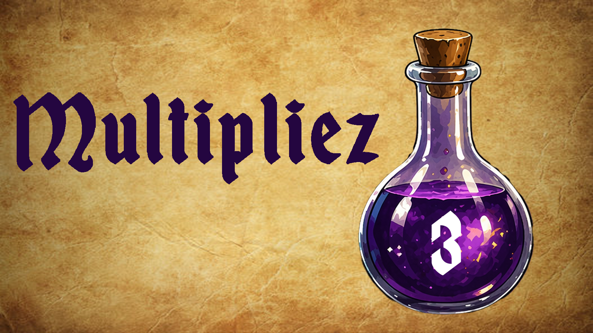
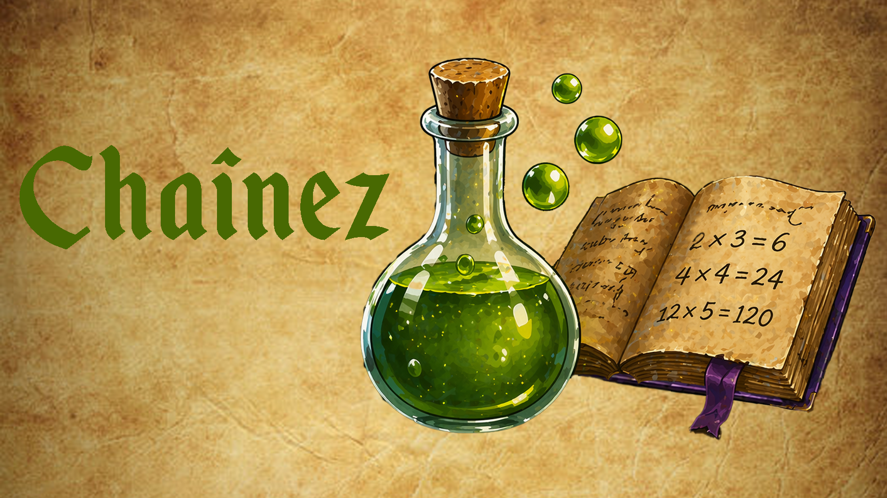
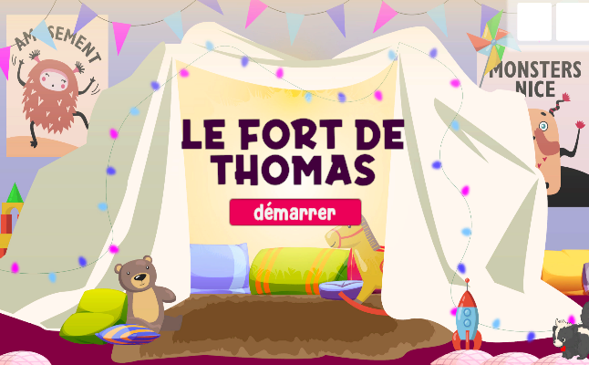
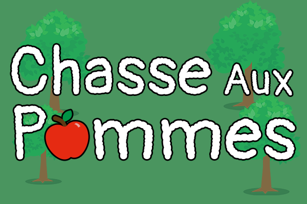
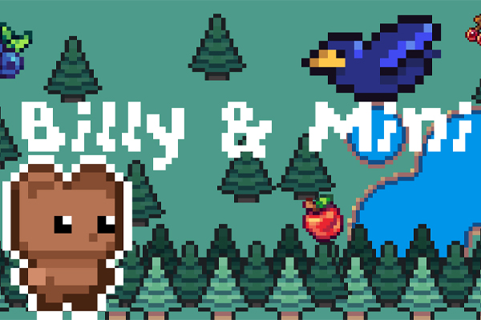
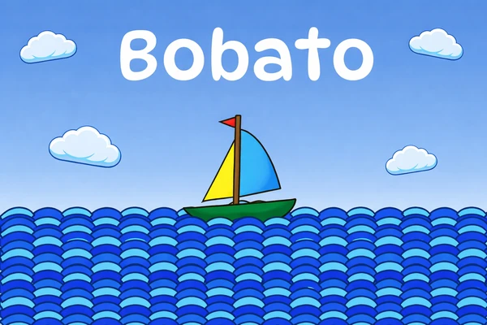
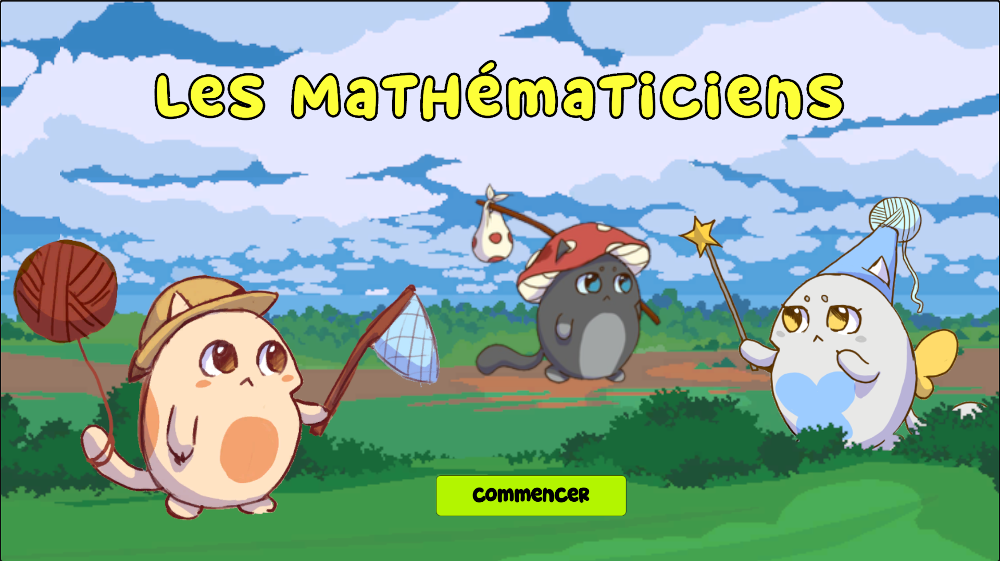
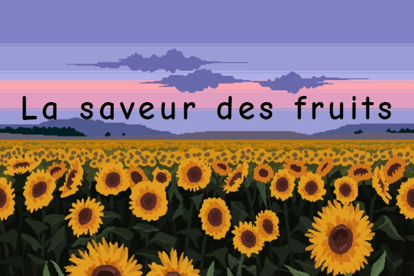
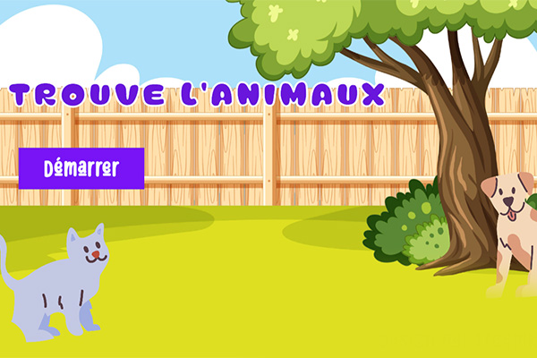
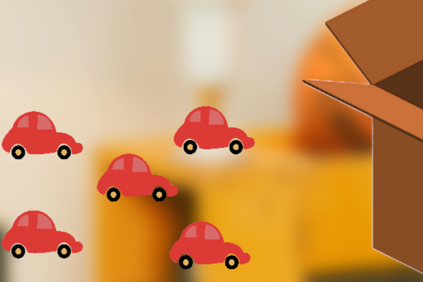

Merlin a besoin de toi. Dans ce jeu de réflexion magique, tu incarnes son apprenti et dois créer des potions en utilisant les multiplications. Chaque calcul te rapproche… ou t’éloigne de l’objectif.
Créateur: Nicolas Gavriliouk Genres: Jeu éducatif, réflexion, mathématiques Âge recommandé: 6 à 8 ans Commencer l’apprentissageDans une tour oubliée remplie de grimoires et de chaudrons bouillonnants, Merlin prépare ses expériences les plus complexes. Mais cette fois, il a besoin d’un esprit vif pour l’aider. C’est là que tu entres en jeu.
Dans Merlin: L’Apprenti des Potions, ton objectif est simple… en apparence : atteindre un nombre précis en enchaînant des multiplications. Mais chaque choix compte. Chaque résultat devient un nouvel ingrédient.
Le jeu repose sur un système de multiplications successives. Tu commences avec un nombre de base, puis tu choisis comment le transformer pour atteindre la valeur cible.
Les joueurs devront :
Une seule erreur… et ta potion échoue. Mais avec assez de réflexion, tu pourras maîtriser l’art des mathématiques magiques.
Nicolas Gavriliouk
Je suis un étudiant en développement de jeux vidéo, passionné par les univers médiévaux et fantastiques. Ce projet est une occasion pour moi d’apprendre, d’expérimenter et de donner vie à mes idées.

Le Fort de Thomas
Jeu pour les enfants de 4 à 5 ans. Aidez Thomas à construire la maison de ses amis en prenant connaissance des outils de construction.
La Chasse aux Pommes
Un jeu éducatif destiné aux enfants de 2 à 5 ans qui simule une sortie en famille dans un verger. L'enfant doit s'occuper de trouver, cueillir et laver les pommes.
Billy & Mini
Billy & Mini est un jeu éducatif de logique, qui explore les thèmes de l'entraide et de l'amitié dans un ambiance ludique et amusante
Bobato
Bobato est un jeu 2D éducatif et créatif destiné aux enfants de 2 à 5 ans, où ils conçoivent et personnalisent leur propre bateau grâce à des interactions simples sur tablette ou ordinateur.
Mon Petit Miaou
Ludique tout en restant éducatif, Mon Petit Miaou offre la possibilité aux tout-petits (2 à 5 ans) d’apprendre à prendre soin d’un animal de compagnie à travers différentes actions.
Les Mathématiciens
Les mathématiciens est un jeu éducatif destiné aux enfants 6 à 8. Le concept du jeu est d’aider les enfants à pratiquer leur math et développer leur vitesse de réflexion.Math Shinobi
Math Shinobi est un jeu de math pour les 6–8 ans où les élèves incarnent un ninja et résolvent des additions en cliquant sur les bonnes réponses.
La saveur des fruits
La saveur des fruits est un jeu éducatif et de détente destiné à un public de 6 à 8 ans et sera déployée sur le web.
La saveur des fruits
La saveur des fruits est un jeu éducatif et de détente destiné à un public de 6 à 8 ans et sera déployée sur le web.
Nettoyer sa chambre
Aide tes parents à ramasser tes jouets dans ta chambre.